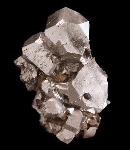

砷（砒霜）：毒中国王，家家必备
代代相传的药粉，吃老鼠药的人，死于美丽的挤奶女工，梅毒的救星，有毒的壁纸
- 为什么砷会成为人人必备的毒药，家庭主妇和皇帝都爱用呢？首先，它几乎是无法被察觉出来的。砷最有名的形式——砒霜，无臭无味，混入食物和饮品中，通常没有味道。而砒霜中毒的症状和食物中毒非常相似，这一点非常有益于杀人者。
- 砷自古就被用于医药之中。它是一种腐蚀剂，也就是说它能引起皮肤表面坏死并脱落。所以，当皮肤出现不正常的增厚时，比方说长牛皮癣，砷是有效的。但是人们却用它来应对所有的皮肤问题，包括溃疡和湿疹。这用一点那用一点不会有多大伤害，但如果使用面积过大，或是过量，就会引起慢性砷中毒。和历史上很多药物一样，砷的使用范围宽广得吓死人，而且毫无道理：发烧、胃疼、胃灼热、风湿，都用砷，而且它还被认为是一种可以强健全身的药。艾肯健体丸、复合硫化止咳含片、格罗斯神经止痛药，18世纪江湖郎中对砷格外热衷，他们出品的成药都少不了砷。
- 砷能够扩张面部的毛细血管，所以人们喝了它会面颊红润，看起来容光焕发，非常健康——但实际上他们的感觉并不好。而且与很多其他含汞的药物类似，砷的毒性会引发一些使人害怕的症状，包括腹泻和意识模糊。在现代实验室能做检测和扫描之前，砷所产生的效果被人们认为是药在发挥效用的表现（如果过度的胃胀气也算药效的话）。
- 砷凡纳明、新砷凡纳明、铋砷剂全都是含砷的化合药物，人类几百年都没有治愈梅毒的药方，是这些药最终刹住了梅毒的脚步。后来，青霉素取代了它们。尽管之前的砷剂药物被用于治疗昏睡症感染（锥虫病），但它们的毒性是不能忽略的。新的抗原虫砷剂在20世纪问世，但到了90年代，因其致癌性被确认，从市场上全部被撤回。